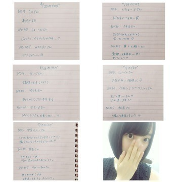

2015/0713Mon日向夏の底
最近学校で久しぶりに会った友達や
撮影現場で会った玲奈さんに
あー！って言いながら
思わずハグをしてしまい
今になってちょっと恥ずかしく
なってきました。
堀未央奈です
人見知りだけど仲良くなると
とことん仲良くなるし
その友達の事を大好きになるから
フレンドリーになります♪
緊急告知になりすみません。
7/13〜17と、もう2日
来週か再来週にOAで
ピラメキーノ640 ドロPに出ます！
モノマネ芸人チームと戦います！
テレビ東京 朝6:40〜
朝、お仕事や学校へ行く前に
観てください(｡･ω･｡)
やっぱり走るの好きやなぁ
いつか逃走中に出るのが夢っ
『夏のホラー秘宝まつり2015』が
8月22日から東京・キネカ大森で
今年も開催されるみたい！
どれも面白そう！
行きたいなぁ(,,•﹏•,,)
中学の時にテキサスチェーンソーや
悪魔のいけにえなどのイメージとなった
「エドゲイン」という人物について調べたり
舞台となったアメリカのテキサス州を
調べたりしていました
ちなみにそれとは正反対のジャンルですが
ジブリももちろん大好きで
生活の一部化としていたのでお部屋でも
サウンドトラックを流しながら
勉強していた中学時代です
深川さんとジブリのお話を
する時間が凄く楽しくて幸せなの♡
今度色んな所行く約束したから
楽しみです！

撮影で着た太陽ノックの衣装！
生田さんのをお借りしました
アンダー楽曲のステージ衣装も
すごく可愛いです。
別れ際のMVの公開はまだ先になります
お楽しみに(*･ω･)ノ
質問返しコーナー
◎みおなは仕事が辛い時とか
追い込まれた時ってありますか？
私は今辞めたいって思ってるぐらい
私は今辞めたいって思ってるぐらい
やりたくなくて、でも途中で
投げ出すのは嫌で今の追い込まれてる
心情をどうにかしたいので
みおなならどう乗り越えますか？
アドバイスください。
◯蟹とか魚が怖いので動物園！
◎ドライブするならどこに行きたい？
◯どんなお仕事か分からないので
アドバイスになれるか分かりませんが...
本当に辛くて耐えられなかったら
辞めるのも1つの道だと思います
でもどんなお仕事でも辛い事は
必ずあります。
辛くても自分を支えてくれる人や
応援してくれる人がいる！って思うと
自信が出て気持ちが強くなれますよ^_^
私は応援しています♫1人じゃないです
一緒に頑張りましょう！
◎今飛んでいきたい所はありますか？
◯夏やから、電車で
遠い田舎に行きたいです。
田舎に泊まろう！という番組
凄く好きやったなぁ、、
◎体調管理のために何か
特別気をつけてることってある？
◯お風呂で温まる、
寝る時にぽんぽんを冷やさない、
一日三食食べる！
◎海外の女優さんで、
好きな女優さんを教えてください！
◯アン・ハサウェイさん、
ミラ・ジョヴォヴィッチさん、
ヒラリー・ダフさん
◎動物園と水族館ならどっちに行きたい？
でもトドとかイルカ見たいなぁ。
どっちでもいいかも(*^^*)
◎ドライブするならどこに行きたい？
◯海沿い(*･ω･)ノ
◎みおなは花火が好き？
どんな花火が好きなのか気になるo(^▽^)o
◯花火未だに怖いんです...
でも色がいろんな色に変わる花火は
綺麗だなぁって思います！
線香花火は不安定な所がまた素敵。
◎浴衣はいつ着る？
◯名古屋と京都♫
違う浴衣を着ます^_^
以上
コメント返し

乃木坂46のドキュメンタリー映画が
公開中です！
舞台挨拶にも出させていただきました。
ドキュメンタリーを観て、私達2期生が
知らなかった乃木坂46を少し
知る事ができました。
みんな悩んで傷ついて
それでも前を見て歩き続ける
それぞれ違う人間で悩みも違うけど
向いている方向は同じなんだなぁ
って思いました。
まだまだ映画には映っていなくても
1人1人に色んなドラマがあって
そんな部分をいつか何かしらの形で
皆さんにも知ってもらえたらいいなぁと
思いました...
自分を追い込む、成長できる機会を
いただける事は自分自身に
日々刺激を与えられます。
もっといろんな事に挑戦していきたいし
自分で自分に限界を作らずに
少しずつ少しずつ周りの人に
頼りながらも成長していきたい。
悔しいっていう気持ちも忘れずに。
感謝の気持ちはもっと忘れずに。
これからも乃木坂46として
みんなで頑張っていきたいです！
是非是非、劇場で観てください♫
そして、映画の舞台挨拶では
深川さん、若月さんと
名古屋と浜松にお邪魔しました〜
凄く緊張しました。
前日は名古屋で夜ごはんを
お腹いっぱい食べてベマーズを
みんなで観たの！
面白かった〜(^-^)/
私もちょこっと出ます♪
12thシングルのペアPVは
私はType-Cに入っています！
「かなしくない〜i'm not sad〜」
監督は今泉さん
ペアは日奈子
同期で一緒に選抜を経験した仲間^_^

私は病気と闘う女の子の役です。
日奈子は私の友達。
辛い事も楽しい事も色んな悩みを
分かり合える
すれ違っても必ず戻ってこれる
日奈子とペアPVができて
良かったです！
私と日奈子にしかできない作品、台本を
今泉監督が作ってくださいました！
ほぼ素に近い私達を是非見てください
もっとお芝居がやりたい！
告知
◎日経エンタ
◎7/17 LARME (みなみと)
◎7/17 美術手帖
◎7/17 読売中高生新聞
◎7/23 soup.
◎7/24 smart
◎7/24 SamuraiELO
◎7/24 Street Jack
◎7/24 ヤングアニマル
◎7/30 BUBKA
◎8月(まだ未定)
グラビアザテレビジョン(日奈子と)
◎毎週日曜日 0:00〜
【乃木坂工事中】
◎毎週月曜日 23:58〜
【初森ベマーズ】
【初森ベマーズ】
◎毎週月曜 25:29〜
【NOGIBINGO!5】
今日は記念すべき第一回目！
あれにも出ます！見てください♬
◎7/13〜17と来週か再来週に2日
午前6:40〜
【ピラメキーノ】
◎7/18 23:30〜0:49
【ケータイ大喜利】
◎7/21 24:55〜
【BOMBER-E p-ナイト】
愛知県で女子旅をしました。
◎7/19 23:30〜24:00
【のぎえいご】
去年の夏はあまり撮影が
無かったので今年は沢山
お知らせができて嬉しいです^_^
ではでは
今日のNOGIBINGO!5は
記念すべき第一回！
見逃したらあかんよ♪
おやすみおな(ヽ´ω`)
2015/07/13 21:24
コメント(645)
未央奈ちゃんすいません。NOGIBNGO観ました。かなりありがとうございます！＼(^-^)／お休みなさい。
NOGIBINGO!5見た♪
企画総選挙でリベンジマッチするんだねＯ(≧∇≦)Ｏ
あれ好きでまたプロレスラーの高山さん呼ぶのかな？(笑)
ノギルームでのみおな可愛かった！
あの髪型良かったよ♪
あれがハーフツインっていうやつ?
是非握手会やって!
未央奈〜こんばんは(｡-_-｡)
今日も一日お疲れ様〜*\(^o^)/*
2回目のコメント〜。1回目のコメントが反映されてない（；＿；）
NOGIBINGO!5見たよ❗️企画総選挙おめでとう〜*\(^o^)/*放送が楽しみだ〜^_^
明日も頑張るぞ〜
おやすみまる
今日も一日お疲れ様〜*\(^o^)/*
2回目のコメント〜。1回目のコメントが反映されてない（；＿；）
NOGIBINGO!5見たよ❗️企画総選挙おめでとう〜*\(^o^)/*放送が楽しみだ〜^_^
明日も頑張るぞ〜
おやすみまる
みおなおつかれさま～( ・ ω ・ )ﾉ
NOGIBINGO5見たよ！腕相撲対決は残念だったけど、企画はおめでとう！(^O^)確かに今またやったら面白そうだなって思いました！
ノギルームのパジャマとリボン、女の子って感じで可愛かったね！
今日の分のピラメキーノ640見たよ～(^O^)走ってるみおながたくさん見れそうで嬉しい！そういう機会って意外になかった気がするし。期待してます！^^
別れ際のMVもちょこっと流れたけど、ドラマチックな感じで気になる。。。こう言われても喜ばないかもだけど、泣いてる顔が何か真に迫ってる感じで良かったよ。
それときいちゃんとの個人PV！予告編は見てたけど、そういう設定だったんだ？！ますます気になる( > _ < )タイトルも意味深だし。。。
最近みおなときいちゃんが一緒の撮影多いみたいで嬉しい^^今日ね、きいちゃんのモバメで長い文章でみおなのこと書いてて、感動しちゃった。二人の関係が好きです！(=^^=)
昨日、悲しみの忘れ方を見てきました。見たら乃木坂の事をもっと応援したくなるし、自分自身にも勇気をもらえる、すごく良い作品だったと思います^^
みおなのシーンも、決して長くはなかったけどあの中にみおなの決意がギュッと詰まってる気がして、良いなって思いました。みおなの所にメンバーが集まっていたシーンはメンバーの絆を感じたし、みおなの755の話も聞いて、おれにとってはすごく印象に残る場面になりました。
あっ！！あと美術手帖の表紙、本当におめでとう！！待ってましたって感じです( T ▽ T )もう絶対買います！
ではまたね～(*´∪`)ﾉ
NOGIBINGO5見たよ！腕相撲対決は残念だったけど、企画はおめでとう！(^O^)確かに今またやったら面白そうだなって思いました！
ノギルームのパジャマとリボン、女の子って感じで可愛かったね！
今日の分のピラメキーノ640見たよ～(^O^)走ってるみおながたくさん見れそうで嬉しい！そういう機会って意外になかった気がするし。期待してます！^^
別れ際のMVもちょこっと流れたけど、ドラマチックな感じで気になる。。。こう言われても喜ばないかもだけど、泣いてる顔が何か真に迫ってる感じで良かったよ。
それときいちゃんとの個人PV！予告編は見てたけど、そういう設定だったんだ？！ますます気になる( > _ < )タイトルも意味深だし。。。
最近みおなときいちゃんが一緒の撮影多いみたいで嬉しい^^今日ね、きいちゃんのモバメで長い文章でみおなのこと書いてて、感動しちゃった。二人の関係が好きです！(=^^=)
昨日、悲しみの忘れ方を見てきました。見たら乃木坂の事をもっと応援したくなるし、自分自身にも勇気をもらえる、すごく良い作品だったと思います^^
みおなのシーンも、決して長くはなかったけどあの中にみおなの決意がギュッと詰まってる気がして、良いなって思いました。みおなの所にメンバーが集まっていたシーンはメンバーの絆を感じたし、みおなの755の話も聞いて、おれにとってはすごく印象に残る場面になりました。
あっ！！あと美術手帖の表紙、本当におめでとう！！待ってましたって感じです( T ▽ T )もう絶対買います！
ではまたね～(*´∪`)ﾉ
ベマーズ金曜日じゃなかったっけ
わわわ！！
コメ返、、うれC～〜！！！笑
みおな最近どんどん可愛くなってる！
握手会楽しみだd(＾ω＾)ｳ-!!
コメ返、、うれC～〜！！！笑
みおな最近どんどん可愛くなってる！
握手会楽しみだd(＾ω＾)ｳ-!!
堀ちゃんと僕は同い年で、いつも応援してるよー！
僕も勉強頑張っていくから、堀ちゃんも頑張ってね！！
おやすみ！！！
僕も勉強頑張っていくから、堀ちゃんも頑張ってね！！
おやすみ！！！
みおなー！今日もお疲れ！
ペアPVがむっちゃ気になってきた！みおなどうなってまうんやろ！
ちょっと心配や笑
アンダー楽曲もPV早く解禁してほしいね！
みおながセンターやから、今ちょー気になるんだよね！
でも、後すこしで発売されるから楽しみにしとるけどね！
夏休みとうとう入ってまう！Liveやら握手会があるで、
むっちゃ楽しみ！テンションも上がってきた！だからさ！
これからも風邪とかひかず、頑張ってね！
ペアPVがむっちゃ気になってきた！みおなどうなってまうんやろ！
ちょっと心配や笑
アンダー楽曲もPV早く解禁してほしいね！
みおながセンターやから、今ちょー気になるんだよね！
でも、後すこしで発売されるから楽しみにしとるけどね！
夏休みとうとう入ってまう！Liveやら握手会があるで、
むっちゃ楽しみ！テンションも上がってきた！だからさ！
これからも風邪とかひかず、頑張ってね！
NOGIBINGO見たよ。企画プレゼン対決、事実上選択肢があれしかない気が（笑）。けど一期生と二期生の対決企画見たかったから楽しみ。
NOGIROOMの堀ちゃんかわいい。
NOGIROOMの堀ちゃんかわいい。
学校とお仕事おつかれさまー！
暑くなってきたから体調崩さないでね？？
名古屋の映画舞台挨拶みにいったよー！
みおなめっちゃかわいかった!!
結構ボーっとしてたね（笑）
映画ほんと感動したよ。大学生であんなに泣くとは思ってなかったよ。
もっともっとこれからもがんばらなきゃね！！
初森べマーズの時間間違ってないかな？？
月曜日じゃなくて金曜日じゃない？
俺が間違ってたらごめんね！
質問！
岐阜の夏のお土産ってなにがあるかな？？
そろそろ夏休みだから実家に買って帰りたいんだ♪
暑くなってきたから体調崩さないでね？？
名古屋の映画舞台挨拶みにいったよー！
みおなめっちゃかわいかった!!
結構ボーっとしてたね（笑）
映画ほんと感動したよ。大学生であんなに泣くとは思ってなかったよ。
もっともっとこれからもがんばらなきゃね！！
初森べマーズの時間間違ってないかな？？
月曜日じゃなくて金曜日じゃない？
俺が間違ってたらごめんね！
質問！
岐阜の夏のお土産ってなにがあるかな？？
そろそろ夏休みだから実家に買って帰りたいんだ♪
みおなちゃん、755も頻度高く更新するし、ブログも長文頑張るし、がんばりやさん！アイドルとしてとても大事だと思うよ。頑張ってね～！
未央奈～こんばんは(^ー^)
あるる★ぽてとSです！
毎日暑いね(*_*)
特濃塩ミルクって飴が
マイブーム(笑)
塩大事だしね！
ペアPVもアンダーMVも
楽しみ＼(^o^)／
そして約あと10日で
京都での握手会やん(^_^)
勿論、両日行くからね♪
今回こそ
ぽてとMになるぞー(笑)
じゃあまたね！
ぽてと
あるる★ぽてとSです！
毎日暑いね(*_*)
特濃塩ミルクって飴が
マイブーム(笑)
塩大事だしね！
ペアPVもアンダーMVも
楽しみ＼(^o^)／
そして約あと10日で
京都での握手会やん(^_^)
勿論、両日行くからね♪
今回こそ
ぽてとMになるぞー(笑)
じゃあまたね！
ぽてと
最近テレビとか雑誌とか本当に凄いね～今未央奈の事知ってる人にはもちろん見て欲しいけど、知らない人に知ってもらえたら良いよね！
たくさんの人に未央奈の魅力が届くように願ってます
坂屋
たくさんの人に未央奈の魅力が届くように願ってます
坂屋
みおな^_^
未央奈コメヘンありがとう♡♡
未央奈大好きヾ(＠⌒ー⌒＠)ノ
未央奈大好きヾ(＠⌒ー⌒＠)ノ
未央奈こんばんは。勝っても負けても虎命タイガース鳥谷こと秀幸（ヒデユキ）だよ。
相変わらず非常に充実したブログ書いてるね。未央奈らしい内容盛りだくさんだからまたまたコメント長くなりそう(;^_^A
久しぶりに会った友達や撮影現場で会った玲奈さんに思わずあ～！とハグして今になってちょっと恥ずかしくなったんだ。
友達も玲奈さんも久々に未央奈に会えて嬉しかっただろうしハグも喜んでくれたんじゃないかな。あまり学校行ってるイメージないけどちゃんと学校行ってるんだね(笑)
人見知りするほうだけど１度仲良くなるととことん仲良くなりフレンドリーになれるんだ
人見知りは直らないだろうけどそういうとこはいいね(^.^)b
ピラメキーノ640ドロPに出るんだ１３日～１７日で２日出るんだ
俺のお仕事は早いから６時前に家出るから録画するね
まあ、見れなくても今はつべでいつでも見れるし
芸人チームと対決したんだ走るの好きだからいつか逃走中出たいんだ
未央奈なら逃走中のミッション勇気を持ってやってくれそうだしいつか出れるといいよね
逃走中ハラハラドキドキするから俺も大好き。
夏のホラー秘宝祭りなんてあるんだ。面白そう。テキサスチェーンソーや悪魔のいけにえのモデルになったエドゲインについて調べたり、舞台となったアメリカのテキサス州調べたりしていたんだ。それとは正反対にジブリも大好きで生活の１部化していたからお部屋の中でジブリのサウンドトラック流して中学時代過ごしていたんだ
まいまいとジブリのお話してる時がすごく幸せなんだまいまいと色々な所行けるといいね
まいまいと未央奈ほのぼのしてそう
太陽ノックいくちゃんのを借りたんだ。背の高さ同じくらいだからちょうどいいかも別れ際PVはまだ先なんだまあ、来週にはCD手に入るし
ドキュメンタリー映画悲しみの忘れ方２期生が知らなかった事も知れたりするんだ
どんな仕上がりか楽しみo(^-^)o
舞台挨拶はまいまい、若月の東海地方出身組と浜松、名古屋行ったんだ名古屋でご飯食べて夜は３人でべマーズ見たんだ
未央奈もちょこっと出るんだどんな役柄か楽しみo(^-^)o
太陽ノック特典PVは同期のきいちゃんとだねどんな感じか楽しみo(^-^)o
NOGIBINGO5さっきチェックしたよ未央奈、きいちゃん、みり愛でプレゼンしてたね
２期生vs１期生企画採用決定おめでとう
前回のリベンジなるかだね
ノギルーム未央奈モバメしてくれた通りかりん、まあや、きいちゃん、未央奈、純奈でまあや一人だけ一期生でかりんや未央奈にからかわれてたね(笑)
今日も半端なく暑くて熱中症要注意レベルだからこまめな水分補給心がけて頑張ろう。
勝っても負けても虎命タイガース鳥谷こと秀幸（ヒデユキ）より
相変わらず非常に充実したブログ書いてるね。未央奈らしい内容盛りだくさんだからまたまたコメント長くなりそう(;^_^A
久しぶりに会った友達や撮影現場で会った玲奈さんに思わずあ～！とハグして今になってちょっと恥ずかしくなったんだ。
友達も玲奈さんも久々に未央奈に会えて嬉しかっただろうしハグも喜んでくれたんじゃないかな。あまり学校行ってるイメージないけどちゃんと学校行ってるんだね(笑)
人見知りするほうだけど１度仲良くなるととことん仲良くなりフレンドリーになれるんだ
人見知りは直らないだろうけどそういうとこはいいね(^.^)b
ピラメキーノ640ドロPに出るんだ１３日～１７日で２日出るんだ
俺のお仕事は早いから６時前に家出るから録画するね
まあ、見れなくても今はつべでいつでも見れるし
芸人チームと対決したんだ走るの好きだからいつか逃走中出たいんだ
未央奈なら逃走中のミッション勇気を持ってやってくれそうだしいつか出れるといいよね
逃走中ハラハラドキドキするから俺も大好き。
夏のホラー秘宝祭りなんてあるんだ。面白そう。テキサスチェーンソーや悪魔のいけにえのモデルになったエドゲインについて調べたり、舞台となったアメリカのテキサス州調べたりしていたんだ。それとは正反対にジブリも大好きで生活の１部化していたからお部屋の中でジブリのサウンドトラック流して中学時代過ごしていたんだ
まいまいとジブリのお話してる時がすごく幸せなんだまいまいと色々な所行けるといいね
まいまいと未央奈ほのぼのしてそう
太陽ノックいくちゃんのを借りたんだ。背の高さ同じくらいだからちょうどいいかも別れ際PVはまだ先なんだまあ、来週にはCD手に入るし
ドキュメンタリー映画悲しみの忘れ方２期生が知らなかった事も知れたりするんだ
どんな仕上がりか楽しみo(^-^)o
舞台挨拶はまいまい、若月の東海地方出身組と浜松、名古屋行ったんだ名古屋でご飯食べて夜は３人でべマーズ見たんだ
未央奈もちょこっと出るんだどんな役柄か楽しみo(^-^)o
太陽ノック特典PVは同期のきいちゃんとだねどんな感じか楽しみo(^-^)o
NOGIBINGO5さっきチェックしたよ未央奈、きいちゃん、みり愛でプレゼンしてたね
２期生vs１期生企画採用決定おめでとう
前回のリベンジなるかだね
ノギルーム未央奈モバメしてくれた通りかりん、まあや、きいちゃん、未央奈、純奈でまあや一人だけ一期生でかりんや未央奈にからかわれてたね(笑)
今日も半端なく暑くて熱中症要注意レベルだからこまめな水分補給心がけて頑張ろう。
勝っても負けても虎命タイガース鳥谷こと秀幸（ヒデユキ）より
みおなこんばんはー♪
同じく人見知りだけど、めっちゃその気持ち分かるよ… 汗
あんまり新しい環境に飛び立つことはしたくないけど、何も変わらないからなあ（´-`）.｡oO
太陽ノックの衣装も似合ってるね！
「悲しみの忘れ方」は試験終わってすぐに、すべすべと映画館行って観たよw
涙脆くないから泣かないだろうなと思って観てたけど、何度も泣きかけましたね… 。
映画観て、みおなへの推し方がちょっと変わったの！
夏にはブログコメ出来るか分からないけどごめんね('ω' ;)
ノギビンゴ5でみおな見れたし今夜はぐっすり眠れそうです。
おやすみおな(ヽ´ω`)
同じく人見知りだけど、めっちゃその気持ち分かるよ… 汗
あんまり新しい環境に飛び立つことはしたくないけど、何も変わらないからなあ（´-`）.｡oO
太陽ノックの衣装も似合ってるね！
「悲しみの忘れ方」は試験終わってすぐに、すべすべと映画館行って観たよw
涙脆くないから泣かないだろうなと思って観てたけど、何度も泣きかけましたね… 。
映画観て、みおなへの推し方がちょっと変わったの！
夏にはブログコメ出来るか分からないけどごめんね('ω' ;)
ノギビンゴ5でみおな見れたし今夜はぐっすり眠れそうです。
おやすみおな(ヽ´ω`)
堀さんはホラーとジブリ好きだもんね〜♪
755のトークの一言もジブリ好きですて書いてあるからね〜♪
逃走中もし出ろたらメンバーと一緒外国旅行行くって言ってたもんね‼︎
堀さんは本当に乃木坂46さんが好き何ですね‼︎
好きな場所に居られるて幸せだね‼︎
僕はそう言う場所無いから憧れるな〜♪
中学生時代いい過ごす方だね‼︎
僕もそんな過ごした方たまにしてるよ笑
755のトークの一言もジブリ好きですて書いてあるからね〜♪
逃走中もし出ろたらメンバーと一緒外国旅行行くって言ってたもんね‼︎
堀さんは本当に乃木坂46さんが好き何ですね‼︎
好きな場所に居られるて幸せだね‼︎
僕はそう言う場所無いから憧れるな〜♪
中学生時代いい過ごす方だね‼︎
僕もそんな過ごした方たまにしてるよ笑
深川さんとジブリの話しをしたんだね‼︎
堀さんが幸せで凄く楽しかったなら良かった‼︎
色々な所行く約束したんだね‼︎ どこ行くか？
もう決めたかな？
僕も凄く幸せだな〜♪(((o(*ﾟ▽ﾟ*)o)))
堀さんアンダーセンター頑張って下さい‼︎*\(^o^)/*
いつも応援してるからね‼︎ 安心して頑張って来て‼︎✨
僕楽しみに待ってるから‼︎
乃木坂46さんの映画本当に感動したよ‼︎
堀さんが髪を切った理由泣いてしまった……
メンバーの知らない一面が見てもっと知れて
もっと好きになれたよ‼︎
傷つくながらも頑張って前向きに頑張ってる姿見て感動した
堀さんが幸せで凄く楽しかったなら良かった‼︎
色々な所行く約束したんだね‼︎ どこ行くか？
もう決めたかな？
僕も凄く幸せだな〜♪(((o(*ﾟ▽ﾟ*)o)))
堀さんアンダーセンター頑張って下さい‼︎*\(^o^)/*
いつも応援してるからね‼︎ 安心して頑張って来て‼︎✨
僕楽しみに待ってるから‼︎
乃木坂46さんの映画本当に感動したよ‼︎
堀さんが髪を切った理由泣いてしまった……
メンバーの知らない一面が見てもっと知れて
もっと好きになれたよ‼︎
傷つくながらも頑張って前向きに頑張ってる姿見て感動した
みおなお疲れ様。ノギビンゴ５見たよ！リベンジマッチ見たい。
お疲れ様です！
ホラー祭りいいねぇ
僕も最低一回は行くと思いますよ＼(^o^)／
エドゲインについて調べるとかあるあるすぎる笑
映画「サイコ」とかから調べたかなぁ僕は
ドキュメンタリー見ましたっ！
ネタバレしないようにしたいけど
堀ちゃんの出た場面で泣きましたよ笑
いい映画だったねほんと
名古屋も京都もいけない(._.)
浴衣楽しみにしてますブログで笑
では暑いので体調に気をつけて
お互い頑張りましょう！
ホラー祭りいいねぇ
僕も最低一回は行くと思いますよ＼(^o^)／
エドゲインについて調べるとかあるあるすぎる笑
映画「サイコ」とかから調べたかなぁ僕は
ドキュメンタリー見ましたっ！
ネタバレしないようにしたいけど
堀ちゃんの出た場面で泣きましたよ笑
いい映画だったねほんと
名古屋も京都もいけない(._.)
浴衣楽しみにしてます
では暑いので体調に気をつけて
お互い頑張りましょう！
ぽんぽんてなにー？
おはよい みおな♪ 暑い日が続くね 夏が大好きなみおなでもこの暑さはどう？ 乃木映画観たよ みおなの場面でエンディング なにやら意味深に感じるけど… 選抜入りリベンジの約束通り個別握手会 参加できる3日間分 買いまくったよ(そうでもないかな？)笑 楽しみにしてます。
みおな
お疲れさま
お疲れさま
今年の夏は、映画、ドラマ、ツアー
と盛りだくさんだね。
NOGIBINGO5、録画出来てるはず。
帰ったらみてみる。
では、(^-^)/ね。
と盛りだくさんだね。
NOGIBINGO5、録画出来てるはず。
帰ったらみてみる。
では、(^-^)/ね。
玲奈さんに会えて良かったですね
堀ちゃんおはよう～。
あ～身体がキツイ。
暑い日が続くけど頑張ろうね。
仕事行きます。
堀ちゃんも行ってらっしゃいませ。
あ～身体がキツイ。
暑い日が続くけど頑張ろうね。
仕事行きます。
堀ちゃんも行ってらっしゃいませ。
頑張ってー！！
26日未央奈ちゃんと初握手！♡
1部に行きます（´-`）.｡oO（♡
未央奈ちゃんと初握手やからどきどき！何話すか今から緊張( ∩´｡•﹏•｡`∩)♡♡
おはよー！堀ちゃん！
NOGIBINGO!5見ました！
１期生との対決楽しみです！！
ではでは
NOGIBINGO!5見ました！
１期生との対決楽しみです！！
ではでは
「ぽんぽん」「花火が怖い」とか本当にかわいいね
しかも、たくさんテレビ出てくれてありがとう！！
私の楽しみができました！！！
アンダー曲のPVのクオリティが高いってゆうか、みおなの泣く演技がすごすぎて感動した
流石みおなです！
映画は、まだ観てないけど、知らなかった乃木坂が観られるから楽しみです！この映画を観てから普段の乃木坂をみると、違った見方ができて、新鮮だと思う。だし、乃木坂を知らない人がみたら、こんな過去があったんだって思うと思うから、自分達のとこを包み隠さず公開してくれてありがとう！！！こっちも勉強になると思います！！！
これからも色んな苦難があると思うけど、乃木坂のみんなならやっていける！！ずーっとずーーーーっと応援しています
みおなの明るさでみんなを引っ張っていってね
しかも、たくさんテレビ出てくれてありがとう！！
私の楽しみができました！！！
アンダー曲のPVのクオリティが高いってゆうか、みおなの泣く演技がすごすぎて感動した
流石みおなです！
映画は、まだ観てないけど、知らなかった乃木坂が観られるから楽しみです！この映画を観てから普段の乃木坂をみると、違った見方ができて、新鮮だと思う。だし、乃木坂を知らない人がみたら、こんな過去があったんだって思うと思うから、自分達のとこを包み隠さず公開してくれてありがとう！！！こっちも勉強になると思います！！！
これからも色んな苦難があると思うけど、乃木坂のみんなならやっていける！！ずーっとずーーーーっと応援しています
みおなの明るさでみんなを引っ張っていってね
ペアPＶ楽しみにしてます！
フィンクスだよ～
みおなのブログは見てると元気でてくる！
今日からもお互い頑張ろ～！
みおなのブログは見てると元気でてくる！
今日からもお互い頑張ろ～！
みおなちゃん、おはようございます
いつも、モバメ、755、ブログ ありがとう。
最近、みおなちゃんとの距離が近くなった。
乃木坂は、制服のマネキンからファンになって、誰推しとかなく、乃木坂が好きだった。
バレッタは、衝撃でした。だれ？この子…
堀未央奈
へー、乃木坂って凄いな。って
いきなり、センターなんだ。
いつも、ニコニコしてる堀未央奈ちゃん。
当たり障りの無い乃木坂の1人でした。
なぜだろう、気が付いたら
堀未央奈推しになってました
まだ、髪を切る前だった
ブログを読んだ。ますます、堀未央奈が好きになった。
モバメを申し込んだ。えらい、マメなみおなちゃんに感動した。
755を始めた。みおなちゃんの返し、アドリブの裏にみえる気遣い。
昨日、悲しみの忘れ方 観てきました
みおなちゃんのシーンは、短い。でも、深かった。
最後の数秒…
涙が、でてきた。
大丈夫。って
思っている以上に、みおなちゃんは強い。
推してて、良かったと本当に思いました
その前のシーンと最後の笑顔
自分自身も、もっと頑張れるって力もらいました。
来年？再来年？続編では、みおなちゃんが乃木坂の中心でいて下さい！
いつも、モバメ、755、ブログ ありがとう。
最近、みおなちゃんとの距離が近くなった。
乃木坂は、制服のマネキンからファンになって、誰推しとかなく、乃木坂が好きだった。
バレッタは、衝撃でした。だれ？この子…
堀未央奈
へー、乃木坂って凄いな。って
いきなり、センターなんだ。
いつも、ニコニコしてる堀未央奈ちゃん。
当たり障りの無い乃木坂の1人でした。
なぜだろう、気が付いたら
堀未央奈推しになってました
まだ、髪を切る前だった
ブログを読んだ。ますます、堀未央奈が好きになった。
モバメを申し込んだ。えらい、マメなみおなちゃんに感動した。
755を始めた。みおなちゃんの返し、アドリブの裏にみえる気遣い。
昨日、悲しみの忘れ方 観てきました
みおなちゃんのシーンは、短い。でも、深かった。
最後の数秒…
涙が、でてきた。
大丈夫。って
思っている以上に、みおなちゃんは強い。
推してて、良かったと本当に思いました
その前のシーンと最後の笑顔
自分自身も、もっと頑張れるって力もらいました。
来年？再来年？続編では、みおなちゃんが乃木坂の中心でいて下さい！
コメント返してもらえた、うれしい✨
これからもがんばって！
映画見てきたよ！
感動した…
これからもがんばって！
映画見てきたよ！
感動した…
未央奈、
NogiBingoでは、
1期生対2期生対決企画で、
優勝企画になったね。
左耳かけの髪型で
新制服の未央奈は、
とってもかわいかったよ。
グレーリボンつけて
後ろ流しの髪型で、
薄い青のモコモコふわふわの
足長パジャマの未央奈は、
とってもかわいかったね。
ヒラメキーのでは、
全力疾走だったね。速かったよ。
今日は、隠れる場所を探してたね。
未央奈はとってもかわいかったよ。
ブログの写真の
未央奈はかわいいね。
太陽ノックの衣装の未央奈は
とってもかわいいよー。
学校の勉強も頑張ってるようだね。
いいね。
先日、郡上郡が
日本で一番暑い場所の日があったね。
岐阜って暑いのかな。
ドキュメンタリー映画では、
未央奈のシーンで
涙が止まらなかったよ。。
頑張って、いろいろ挑戦して、
どんどん成長していってねー。
明日もヒラメキーノ楽しみにしてるよー。
NogiBingoでは、
1期生対2期生対決企画で、
優勝企画になったね。
左耳かけの髪型で
新制服の未央奈は、
とってもかわいかったよ。
グレーリボンつけて
後ろ流しの髪型で、
薄い青のモコモコふわふわの
足長パジャマの未央奈は、
とってもかわいかったね。
ヒラメキーのでは、
全力疾走だったね。速かったよ。
今日は、隠れる場所を探してたね。
未央奈はとってもかわいかったよ。
ブログの写真の
未央奈はかわいいね。
太陽ノックの衣装の未央奈は
とってもかわいいよー。
学校の勉強も頑張ってるようだね。
いいね。
先日、郡上郡が
日本で一番暑い場所の日があったね。
岐阜って暑いのかな。
ドキュメンタリー映画では、
未央奈のシーンで
涙が止まらなかったよ。。
頑張って、いろいろ挑戦して、
どんどん成長していってねー。
明日もヒラメキーノ楽しみにしてるよー。
755の頻度が高くて、嬉しいです！
いつか返信してくれるありがたいです 笑
堀ちゃんらしさが大好きです‼︎
辛いこともあると思うけど一緒に
頑張ろう！
いつか返信してくれるありがたいです 笑
堀ちゃんらしさが大好きです‼︎
辛いこともあると思うけど一緒に
頑張ろう！
755にコメ返の再度載せてくれてありがとう！
ファンのみんなのこと考えていろいろ行動してくれてホントにありがとう！
これからも頑張って(^^)
ファンのみんなのこと考えていろいろ行動してくれてホントにありがとう！
これからも頑張って(^^)
僕も人見知りやで。でも相手からめちゃ話しかけられたら、話せるけど…。ジブリいいやんなぁ…僕はトトロが好き……でもトトロって何か怖い都市伝説あるやんなぁ…。生田さんとサイズ、ドンピシャなん？これはデニム生地の衣装？ちょっと待って堀さん！動物園か水族館なら断然、水族館やろ！動物園臭くない（笑）？美ら海水族館行きたいねんなぁ。ていうか沖縄行きたい！夏になるといつも思う。そりゃみんな悩んで傷ついてるで…それでも前を見て歩き続ける。というか前を見るしかないもんなぁ。時々それが、すごい疲れる…。あれ？PVってもう2人体制になったんや（笑）？
ヽ(＾ε＾)ｵﾂｶﾚｻﾝｯ!
みおなのペアPV見たらめっちゃ泣きそうだ笑
楽しみやなー((´∀｀*))
みおなのペアPV見たらめっちゃ泣きそうだ笑
楽しみやなー((´∀｀*))
わっふぅい( *・ω・)
未央奈お疲れ様！
未央奈お疲れ様！
おはよーほーりー✨
毎日モバメありがとう✨そして舞台挨拶で浜松に来てくれてありがとう
毎日モバメありがとう✨そして舞台挨拶で浜松に来てくれてありがとう
☆彡☆彡☆彡☆彡☆彡☆彡☆彡
みおな♪タンポポだけどもー♪
(●´∀｀●)/
タンポポんとこは初森ベマーズ毎週金曜日にやってるよん♪
(。≧∇≦。)
みおなは可愛いなー♪
さすがはみなみの相棒だなー♪
゜+。(*′∇｀)。+゜
みなみおなは最強♪
携帯に一番入ってる写真がみなみおなだから♪
(´ψψ｀)
また書くねー♪あ、きいちゃんとのコンビも好きなんだな♪
(*´∀｀*)
みおなのジジになりたい♪タンポポでした♪
☆彡☆彡☆彡☆彡☆彡☆彡☆彡
みおな♪タンポポだけどもー♪
(●´∀｀●)/
タンポポんとこは初森ベマーズ毎週金曜日にやってるよん♪
(。≧∇≦。)
みおなは可愛いなー♪
さすがはみなみの相棒だなー♪
゜+。(*′∇｀)。+゜
みなみおなは最強♪
携帯に一番入ってる写真がみなみおなだから♪
(´ψψ｀)
また書くねー♪あ、きいちゃんとのコンビも好きなんだな♪
(*´∀｀*)
みおなのジジになりたい♪タンポポでした♪
☆彡☆彡☆彡☆彡☆彡☆彡☆彡
未央奈おはよー( ´ ▽ ` )ﾉ
先日、乃木坂のドキュメンタリー観てきたよ〜！！
映画の中ではいろんなシーンでたくさん泣いちゃったけど、最後の数秒で一気にぶわっと来ました（；＿；）
未央奈の覚悟と決意が見られてさらに応援する気になったよ！！^_^
p.s.はやく「別れ際、もっと好きになる」のMV観たいなぁ(￣▽￣)ノ
質問もしとこ！
未央奈は春夏秋冬の中でどの季節が好きですか？
僕はやっぱり夏が好きです！
まあ寒がりってのもあるんだけどね(´･_･`)笑
先日、乃木坂のドキュメンタリー観てきたよ〜！！
映画の中ではいろんなシーンでたくさん泣いちゃったけど、最後の数秒で一気にぶわっと来ました（；＿；）
未央奈の覚悟と決意が見られてさらに応援する気になったよ！！^_^
p.s.はやく「別れ際、もっと好きになる」のMV観たいなぁ(￣▽￣)ノ
質問もしとこ！
未央奈は春夏秋冬の中でどの季節が好きですか？
僕はやっぱり夏が好きです！
まあ寒がりってのもあるんだけどね(´･_･`)笑
ブログ更新ありがとう(^-^)
俺もホラーとかSF好きで調べてた！
ホーリーはSF好き？？
映画土曜見に行く！
メンバー1人1人の苦悩とかドラマで泣いちゃいそう>_<
俺もホラーとかSF好きで調べてた！
ホーリーはSF好き？？
映画土曜見に行く！
メンバー1人1人の苦悩とかドラマで泣いちゃいそう>_<
みおなお疲れさま
昨日、映画をみたよ
いろんな思い、背負ってきたもの。
俺の想像をこえてました。
みおなの気持ち、悩み、言葉には出してなくても
伝わりました。
映画終わって、なんやろ？
みおなの気持ち、もう一度みたくて、2回連続で観てました。
これからも、応援してきます。
みおなは1人じゃない。
みおなが今いる場所は大切な場所。
うちらファンが思う事は一つ。
今この場所にいてくれてありがとう。
しげ【未央奈単推し】より
昨日、映画をみたよ
いろんな思い、背負ってきたもの。
俺の想像をこえてました。
みおなの気持ち、悩み、言葉には出してなくても
伝わりました。
映画終わって、なんやろ？
みおなの気持ち、もう一度みたくて、2回連続で観てました。
これからも、応援してきます。
みおなは1人じゃない。
みおなが今いる場所は大切な場所。
うちらファンが思う事は一つ。
今この場所にいてくれてありがとう。
しげ【未央奈単推し】より
私もジブリ好き！
今年の秋に名古屋でジブリの大博覧会があるんだよ！
今年の秋に名古屋でジブリの大博覧会があるんだよ！
今日も暑いけど頑張ろう(°▽°)！
学校行ってきまーす(；・ω・)
学校行ってきまーす(；・ω・)
お疲れ様です。
逃走中出てみたいですね！
帰宅部でしたが、50m走は6.2秒なので
そこそこ早かったので、地形を、使いながら逃げ切れる自信があります！！
堀ちゃんの自信はいかほどですか？
今年は皆さん、様々な媒体に出ていて嬉しいです。
ただ、全てに目を通すのは不可能……
寝ぼけながら書いているので、
文章がぐちゃぐちゃなのには触れないでください笑
では、体調管理には気をつけてください。
逃走中出てみたいですね！
帰宅部でしたが、50m走は6.2秒なので
そこそこ早かったので、地形を、使いながら逃げ切れる自信があります！！
堀ちゃんの自信はいかほどですか？
今年は皆さん、様々な媒体に出ていて嬉しいです。
ただ、全てに目を通すのは不可能……
寝ぼけながら書いているので、
文章がぐちゃぐちゃなのには触れないでください笑
では、体調管理には気をつけてください。


未央奈ちゃん！こんばんは(*´ω`*)
私も久々の相手に、
あー！って言いながら
ハグすることよくある♡笑
女子の中であるあるだよね（笑）
もし次握手会行ったら、久々だし
未央奈ちゃんにもあー！って
ハグしたーい＼(^o^)／笑笑☜
私も人見知りだけど
仲良くなったら、「うるさい」って
言われちゃうくらい喋って
とことん仲良しになるタイプ♪♪
元陸上部の未央奈ちゃんの勇姿、
時間合ったらみてみるね(*´ω`*)
私も走るの好き！私は昔から
短距離より断然長距離派♡
ゴールが初めから
見えないところが好きで（笑）、
運動部が5人くらいしか
いないクラスだったのに、体育で
長距離するとクラスで3番目で
帰宅部の中でも1番速くて、
クラス全員にめっちゃめっちゃ
驚かれてた（笑）（笑）
一度未央奈ちゃんに
逃走中出てほしい！（笑）
見てて絶対楽しいと思うｗ
未央奈ちゃん、ほんと
ホラー好きだよね(´･ω･`)笑
私はホラー苦手すぎて
ホラー映画もまともに
見たことがないｗ
ジブリは本当に全体的に綺麗だよね。
個人的にはジブリの中で、ずっと
猫の恩返しが1番好き ∩^ω^∩♡♡
ハルがムタを追いかけて
猫の事務所に行くシーンが本当に好き♡
そして、バロンがイケメン♡ 笑笑
乃木坂のステージ衣装って
毎回可愛いし、今回もすごく
私好みだったから、
未央奈ちゃんが着てる画像を
載せてくれて嬉しい～！(>_<)
本当に「別れ際」の
PVの公開が楽しみ！！♡
公開されたら、絶対すぐ見るね♡ 笑
あんまり関係ないこと言っちゃうけど
質問返しのところ読んでて、
「＂ぽんぽん＂って何ぞ！？」って
思ったからさっき調べた（笑）（笑）
あと、水族館の雰囲気が好きだし
魚眺めるの好きだから、
私は水族館派かも(*^ ^*)笑
でも、動物園はワイワイできるし
それはそれで楽しいよね～♪♪
乃木坂のドキュメンタリー、
自分が住んでる神戸では
やってないから、大阪まで
見に行く予定だよ～＼(^o^)／
絶対泣いちゃうと思うけど、
しっかり見てくるね(；ω；)
ひなみおペアPVとか絶対可愛い！！
ってずっと思ってたけど、
未央奈ちゃんの役、
すごく難しそうだね( ; _ ; )
そして、すれ違っても
戻ってこれる関係って
ものすごく素敵だよね。
自分と仲良くしてくれる子とは
せめて、ずっとそんな関係で
いたいなって思う(；ω；)
告知が沢山で、本当に
私まで嬉しい。・°°・(＞_＜)・°°・。
チェックできる範囲は
絶対チェックする！！（笑）
でも、塩アイスのBUBKAが
1番楽しみかも （ू˃̶᷄ ⁻̫ ˂̶᷄ू ⌯） 笑
最近暑くなってきたから、
未央奈ちゃんも夏バテとか
熱中症とか本当に気をつけてね！
お仕事がんばってね。
では、また更新楽しみにしています♩
おやすみおな(ヽ´ω` )